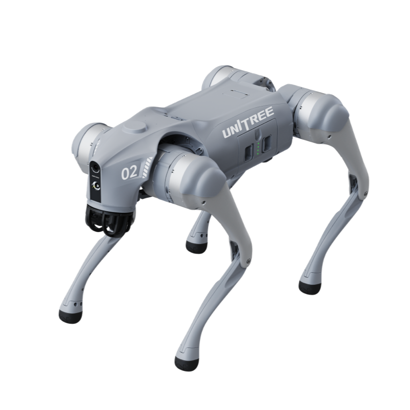
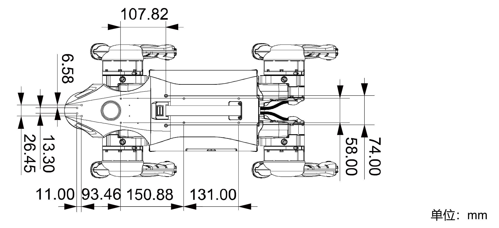
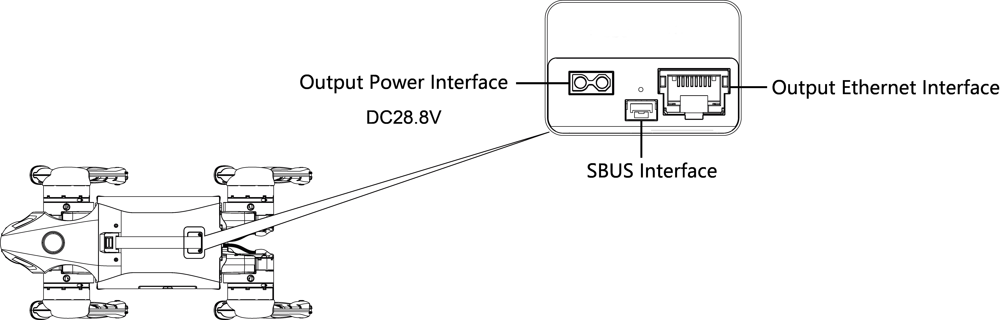
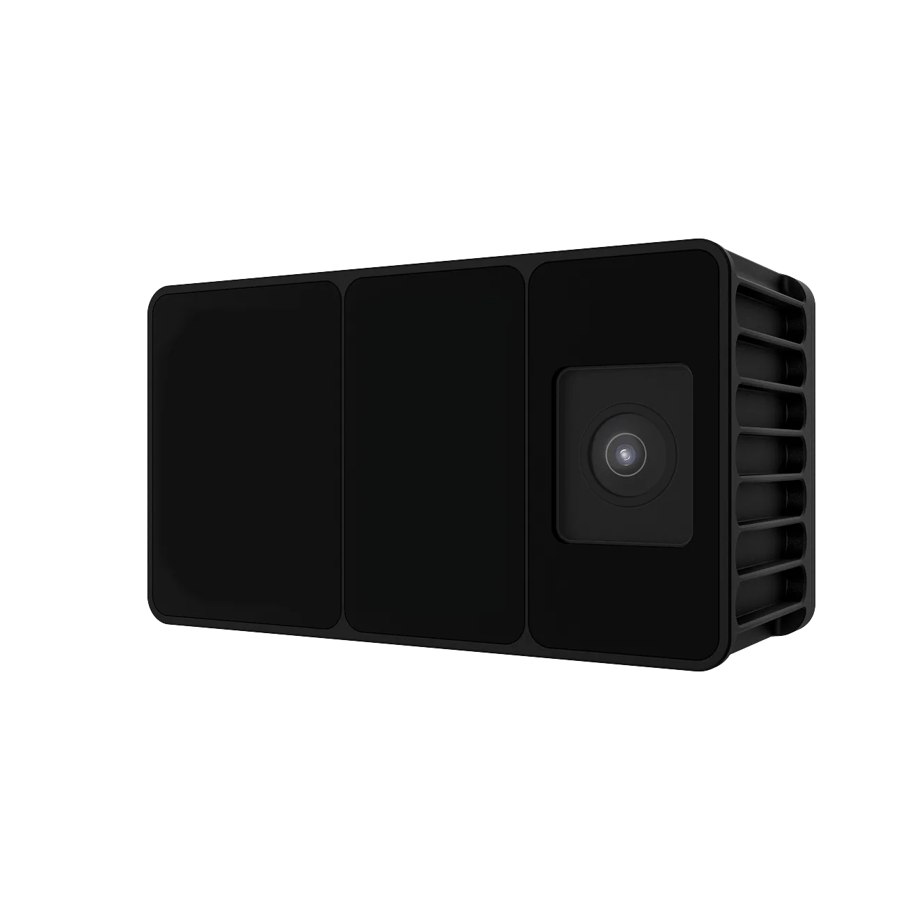
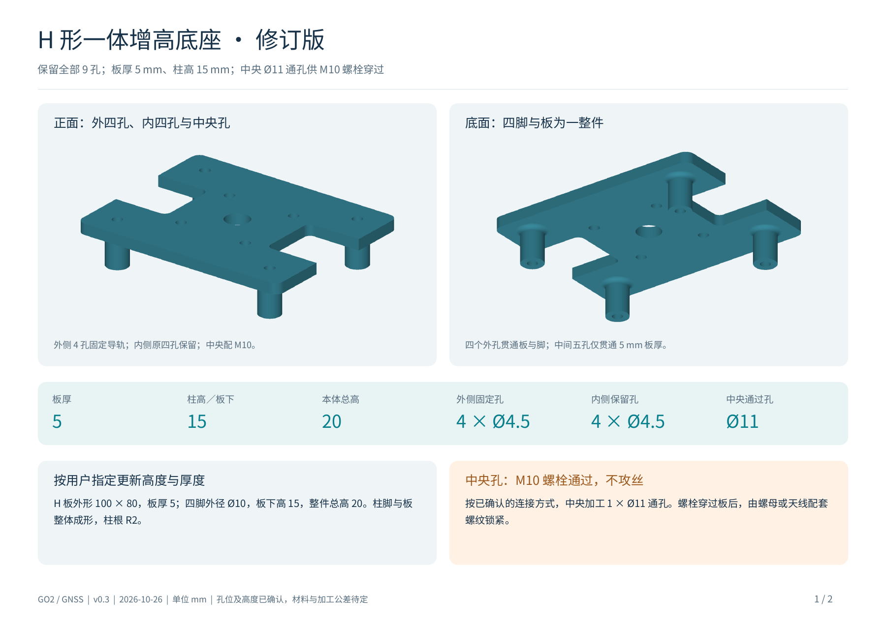
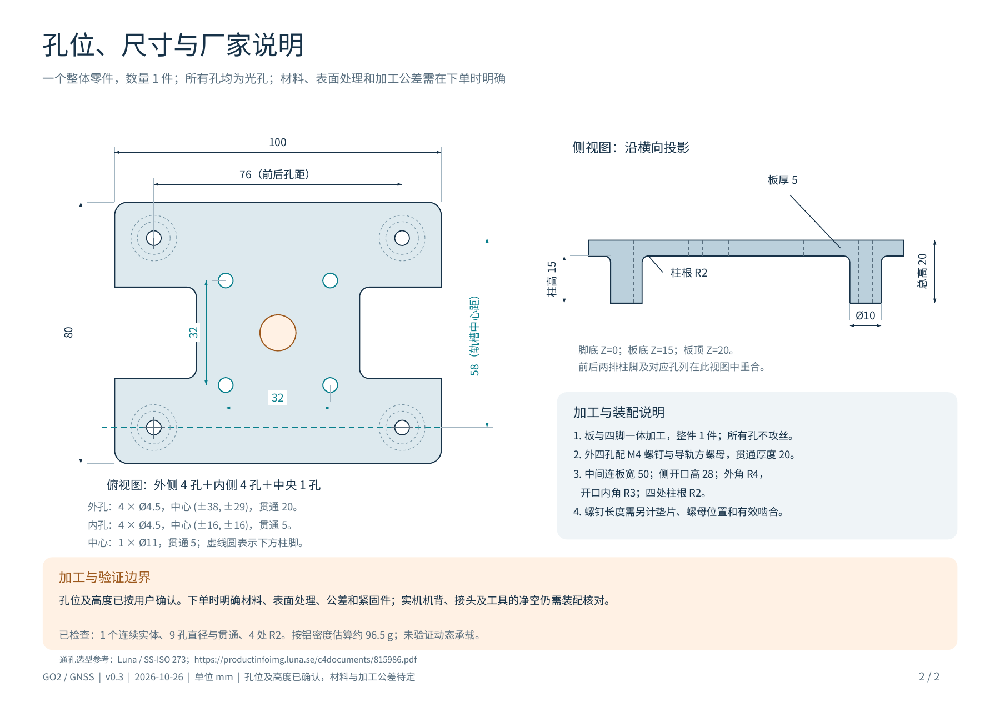

本机开机流程
结合实验室操作记录与宇树 Go2 用户手册。
- 01
摆好机身与四肢
放在平整地面，腹部支撑垫贴地，机身保持水平。小腿完全收拢，四腿关节与足端平放，避免机身压住大腿或小腿；确认各关节状态正常。
- 02
短按后接长按电源键
先短按一下，再长按至少 2 秒。本机可听到关节与风扇启动声；声音响起表示启动已开始，随后继续等待。
- 03
等待自动站起
本机启动后会自动站起来。宇树手册给出的参考等待时间约为 2 分钟，正常启动时头部指示灯由绿色闪烁转为常亮，机身保持水平；以实际状态为准。

THE FIELD GUIDE
启动前按规定摆好机身与四肢，并确认关节状态正常。完成电源操作后等待初始化，本机会自动站起。
结合实验室操作记录与宇树 Go2 用户手册。
放在平整地面，腹部支撑垫贴地，机身保持水平。小腿完全收拢，四腿关节与足端平放，避免机身压住大腿或小腿；确认各关节状态正常。
先短按一下，再长按至少 2 秒。本机可听到关节与风扇启动声；声音响起表示启动已开始，随后继续等待。
本机启动后会自动站起来。宇树手册给出的参考等待时间约为 2 分钟，正常启动时头部指示灯由绿色闪烁转为常亮，机身保持水平；以实际状态为准。
使用宇树官方双手手持遥控器。以下根据官方现行手册整理，涵盖 R1 / R3；按键功能以设备当前固件与 App 内说明为准。
电源键短按一次，再长按超过 2 秒。声音模式下，R3 开机提示两声，R1 提示一声。
已绑定的遥控器开机后可连接机器狗。R3 看右侧 DL 指示灯亮起；R1 看左侧数传信号灯全亮。
电源键短按一次，再长按超过 2 秒；声音模式下提示三声。
使用 Unitree Go App 绑定遥控器与机器狗。
连接机器狗后，进入 设置 → 数据 → 遥控器，打开遥控器开关，填写这只遥控器对应的编码。旧版 App 的入口为“设置 → 遥控器设置”。
本页尚未记录实验室遥控器的绑定编码，请填写实际编码。绑定完成后，用上方的数传指示灯确认连接。
| 摇杆动作 | 行走模式 | 站立姿态模式 |
|---|---|---|
| 左摇杆 ↑ / ↓ | 前进 / 后退 | 机身升高 / 降低 |
| 左摇杆 ← / → | 向左 / 向右平移 | 机身左右侧倾 |
| 右摇杆 ↑ / ↓ | 抬头 / 低头 | 抬头 / 低头 |
| 右摇杆 ← / → | 向左 / 向右转向 | 左右扭身 |
组合键：先按住肩键，再点按另一个键。
关节进入阻尼状态，机身可能下沉。站立锁定使用下表的 L2 + A。
| 按键 | 功能 |
|---|---|
| START 点按 | 解锁 / 默认行走步态 |
| SELECT 点按 | 姿态模式 |
| L2 按住 + A 点按 | 站立锁定 / 趴下 |
| L2 按住 + START 点按 | 跑步模式 |
| L1 按住 + SELECT 点按 | 续航模式 |
| X 点按 | 开启避障 |
| Y 长按 3 秒 | 关闭避障 |
| L2 + SELECT 点按 | 切换探照灯 |
先保持摇杆不动，同时按下并松开 F1 和 F3。听到每秒一次的提示音后，将左右摇杆各自推至最大行程并转动数圈；提示音停止后，点按 F3 完成校准。
关闭遥控器后，通过 USB-C 接口连接 5V USB 充电器。R3 充满时电量灯全亮，R1 旧版手册记载为全灭；按对应版本判断。
宇树现行手册同时收录 R1 与 R3，说明二者核心操作一致。不同固件的扩展动作可能变化，完整动作表请查看官方手册或 Unitree Go App。
实验室自备 Cudy 2×2 MIMO 路由设备，运行 OpenWrt，提供 RoboNet Wi-Fi。接入设备可访问机器狗局域网；配置上联后也可访问外网。
在手机或电脑的 Wi-Fi 列表中选择 Cudy 提供的 RoboNet，输入密码 node123456。
浏览器访问 192.168.124.1，进入“网络 → 无线”。
删除其中一条用于外网接入的无线配置，然后扫描并连接上游 Wi-Fi。推荐使用手机热点，按页面提示完成连接。
配置完成后，连接 RoboNet 的设备可同时访问机器狗局域网和外部网络。
目前观察到机器狗重启后需要重新配置上联网络。此说明仅记录这台设备当前的使用现象，不代表所有 OpenWrt 设备都会如此。
先连接 RoboNet，再通过下方地址登录机器狗终端。192.168.124.1 是 Cudy 路由器的管理地址，机器狗 SSH 地址为 192.168.123.18。
实验室提供的本机账号与地址。
ssh unitree@192.168.123.18出现密码提示后输入 1 并回车。终端输入密码时通常不显示字符。

HARDWARE硬件接口与孔位背部接口 · 安装尺寸 · 原始图纸依据宇树 Go2 EDU 用户手册整理机身接口与安装尺寸。原始图纸保存在本地，可点击放大查看。
位于机身背部中央，见厂家接口位置图。

| 接口 | 用途与定义 |
|---|---|
| RJ45 以太网 | 连接用户电脑或 Orin 拓展坞，接入机器狗局域网。 |
| 电源输出 | 手册标注 DC 28.8V，连接 Orin 模组的 BAT 输入；实际电压随电池变化。 |
| SBUS | 通用遥控器通信接口。按原图朝向从左到右为 NC / GND / SBUS，此口不提供电源输出。 |
机身背部输出是电池电压，接设备前核对其输入电压范围；5V / 12V 输出见下方拓展坞接口图。
尺寸摘录自 Go2 EDU 厂家原图，单位均为 mm。
背部最前方的 4 个孔位已用于固定外置 Odin1 传感器。此位置由实验室提供；支架转接孔距、螺钉规格与传感器相对机身的外参尚未记录。查看外置传感器说明 →
| 原图位置 | 尺寸 / mm | 读取说明 |
|---|---|---|
| 背部内侧三组孔 | 58.00；150.88；131.00 | 三组左右成对孔；58.00 为横向孔距，后两项为相邻组的纵向孔距。 |
| 头部两列孔 | 13.30；26.45；11.00 | 两列分别对应 13.30 / 26.45 的横向间距，纵向相差 11.00。 |
| 其他定位标注 | 6.58；93.46；107.82；74.00 | 对应的孔、尺寸线与基准见原图。 |
此原图未标注螺纹直径、螺距与有效深度。加工支架、选螺钉前复核本机对应孔的螺纹及可用深度，并确认现有附件占用情况。

EXPANSION外置设备Odin1 · MID360 · GNSS 天线统一查看 Odin1、MID360 与 GNSS 天线的安装状态、接入资料和支架文件。
实验室在 Go2 背部最前方四个孔位安装了留形科技 Odin1，作为外置 LIVO 感知模组，集成视觉、LiDAR 与 IMU。
留形科技官方产品图 ↗非本机安装实拍
LIVO · LiDAR / Inertial / Visual Odometry
1600 × 1296 全局曝光相机，输出 RGB 图像。
深度视场 120° × 90°，输出原始点云或真彩 SLAM 点云。
输出原始惯性数据，参与机内融合与位姿估计。
Odin1 可在设备内部完成融合计算，向主机输出位置、姿态及轨迹；官方提供 Linux SDK 和 ROS 接口。这里记录其公开能力，本机当前启用的算法模式与驱动版本另行登记。
电源和数据分别连接；实际接线以本机装配为准。
官方接线指南推荐 12 V / 2 A。产品页标注工作电压 9–26 V；接线指南要求直连电源保持 9–24 V，并强调不得超过 26 V。
官方数据接口为 USB，主机运行 SDK / ROS 驱动读取数据。本机所接主机、USB 端口和启动方式尚未登记。
| 模式 | 用途 | 使用要点 |
|---|---|---|
| 传感器模式 | 采集原始传感器数据 | 关闭机内算法，用于主机侧算法开发。 |
| 里程计 · 0 | 连续位姿估计 | 算法模式下设置 map_mode = 0。 |
| 建图 · 1 | 建立并保存地图 | map_mode = 1；保存完成后将地图取回主机。 |
| 重定位 · 2 | 在已有地图中定位 | map_mode = 2；需先传入 Odin1 建图模式生成的地图。 |
官方流程要求切换模式前先停止算法，更新配置后再启动；保存地图本身不会停止建图。上述数值是官方接口参数，不表示本机当前设置。
Ubuntu 快速启动指南提供 USB 识别、权限设置、驱动编译及 ROS 启动流程。接入前按实际 Ubuntu / ROS 版本选择分支；本页未假设机器狗已安装这些驱动。
官方分别定义 IMU、LiDAR 和相机坐标系；相机标定与外参应读取本台设备生成的 config/calib.yaml。Odin1 到 Go2 机身的安装外参需按当前支架测量或标定，不能用官方示例替代。
供电来源与线束、数据连接主机、固件 / 驱动版本、启动命令、启用模式、地图存放位置，以及 Odin1 到机身的外参。
可接入 Livox MID-360 激光雷达。目前暂缺安装保护架，作为待完成机械安装的扩展设备记录。
Livox 官方产品图 ↗非本机安装实拍
接入参考依据 Livox 官方规格与驱动文档。
| 感知范围 | 水平 360°，垂直 −7°～52°。 |
|---|---|
| 输出 | 点云 20 万点／秒；内置 ICM40609 IMU。 |
| 数据连接 | 100 BASE-TX 以太网，连接运行驱动的主机。 |
| 设备尺寸 | 65 × 65 × 60 mm，约 265 g。 |
准备匹配的安装／保护架，再确定固定位置与接线。传感器 IP、供电线束和主机配置尚未登记。

GNSS 天线大天线支架尚未 3D 打印 展开详情收起详情小型天线可粘贴固定；大型天线已准备专用支架设计，尚未 3D 打印。以下为实验室提供的固定方式与支架文件。
下图直接来自用户提供的设计包；图示为 CAD 模型。
感谢 Li-Ta Hsu 老师课题组的翟伟伟提供本支架图纸。
| 设计项 | 附件标注 / mm |
|---|---|
| H 形板 | 100 × 80，板厚 5。 |
| 增高结构 | 板下柱高 15，总高 20；四脚与板为一体结构。 |
| 外侧固定孔 | 4 × Ø4.5，孔距 76 × 58，用于配合 M4 螺钉连接导轨。 |
| 内侧保留孔 | 4 × Ø4.5，32 × 32 方阵。 |
| 中央天线接口 | Ø11 通孔，供 M10 螺栓穿过；底座本身不攻丝。 |
